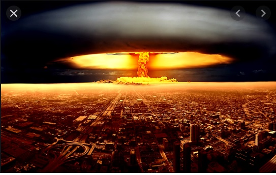

Aprendendo sobre energia
Quando percebemos que estamos acima do peso, ou abaixo, costumamos ir ao médico para que ele nos oriente em relação à nossa dieta. Em geral, essa dieta é definida em função da quantidade de energia (calorias) contida em tudo que ingerimos. A conta de luz que pagamos no final do mês também é definida em função da quantidade de energia elétrica que consumimos naquele período para iluminar nossas casas, conservar alimentos em geladeiras e freezers, preparar refeições em fornos elétricos ou de micro ondas, para aquecer água, aclimatizar ambientes por meio de aparelhos de ar condicionados, etc. Também no caso dos automóveis, a energia obtida a partir da queima do combustível, é a responsável pela movimentação dessas máquinas, assim como a energia proveniente do processo de queima do gás de cozinha possibilita o cozimento dos alimentos.
Logo, se fizermos uma reflexão sobre a importância da energia na sociedade contemporânea vamos verificar que, na maior parte dos casos, os processos que envolvem transformações de energia estão associados a melhoria da qualidade de vida e a promoção do bem-estar. Entretanto, não podemos dizer que isso seja sempre verdade, se levarmos em conta, por exemplo, os efeitos nefastos do uso da energia nuclear na indústria bélica e os inúmeros problemas socioambientais que os diferentes processos de transformação de energia podem causar.
Você deve ter percebido que nem sempre o termo energia aparece aplicado somente ao contexto científico. É comum a sua utilização em diferentes situações no dia a dia. Nessa unidade vamos estudar o conceito de energia, pois ele é um dos conceitos centrais, não só para a física como para outras ciências da natureza.
Energia, um conceito universal
Apesar do homem e da sociedade como um todo dependerem tanto da energia, sobretudo daquela que chega à Terra proveniente do Sol, não existe uma definição exata para este conceito segundo FEYNMAN. Assim, estamos lidando com uma entidade física que manipulamos, processamos, transformamos, e até pagamos por ela, sem que seja possível atribuir-lhe uma definição muito exata. A forma mais utilizada para definir a energia de um sistema é associá-la à propriedade que o sistema possui de realizar trabalho.
Muitos processos naturais envolvem transformações de energia. Por isso, é comum a utilização de complementos associados ao termo com o objetivo de identificar ou especificar esses processos. Termos como energia elétrica, energia nuclear e energia solar, exemplificam alguma dessas situações onde se especifica um contexto para um conceito que, na verdade, é universal
No sistema internacional de unidades (SI), a unidade atribuída à grandeza energia é o Joule, cujo símbolo é J, em homenagem a James PRESCOTT JOULE (1818 – 1889) , físico britânico que muito contribuiu para este campo do conhecimento com seus estudos sobre o calor, considerado uma das formas de energia
Energia Cinética
Trabalho de uma força
No dia a dia o termo trabalho pode estar associado a uma série de significados. Aqui vamos nos ater ao significado que o termo adquire no contexto da física
Trabalho pode também ser definido em termos da força aplicada a um corpo e do deslocamento a ele transmitido, pois quando um corpo em movimento se encontra sob a ação de uma força resultante ele experimenta o efeito de uma aceleração que provoca uma variação na sua velocidade. A esta variação na velocidade está associada uma variação na energia cinética, como vimos na seção anterior
O chamado teorema do trabalho – energia apresenta a definição de trabalho de uma força em função da variação de energia cinética que o corpo sofre devido à ação desta força ao longo do trecho em que ocorre o deslocamento. Segundo este teorema
O trabalho que a força realiza equivale à variação da energia cinética sofrida pelo corpo.
Energia potencial
Diz-se que um sistema possui energia potencial quando ele está potencializado para realizar trabalho. Em geral, a percepção imediata da presença de energia potencial em um sistema não é tão fácil como no caso da energia cinética, que pode ser verificada pela simples observação do corpo em movimento. A seguir, vamos lançar mão de dois sistemas bem simples com o objetivo de auxiliar na compreensão do conceito de energia potencial. O primeiro deles é o sistema massa – mola, onde atua apenas a força elástica da mola, e o segundo é uma massa que realiza movimento vertical, onde atua somente o peso.
Mesmo estando em repouso – totalmente comprimida ou distendida –, a mola possui as condições para movimentar a massa m, e com isso, realizar trabalho. Essa parcela de energia acumulada no sistema e que o potencializa para a realização do trabalho é denominada ENERGIA POTENCIAL ELÁSTICA do sistema.
Para pequenas deformações, que não comprometam as propriedades elásticas da mola, a relação entre a força elástica que a mola exerce no bloco (Fel) e a deformação da mola (x) pode ser considerada linear e representada pela expressão: F=k.x
Energia potencial gravitacional
A figura a seguir ilustra uma situação onde uma esfera de massa m se encontra posicionada em duas situações. Na primeira, ela está apoiada sobre a superfície de uma mesa e na segunda ela encontra-se elevada até uma altura h em relação ao nível de referência (0) que coincide com a superfície. Sobre ela está representada a ação da força peso (P).

21/07 - 1ª série EM - Física - Máquinas simples
14/07 - 1ª série EM - Física - Potência de Trabalho: Parte II: Atividades
08/07 - 1ª série EM - Física - Potência de trabalho
01/07 - 1ª série EM - Física - Atividades: Energia mecânica
24/06 - 1ª série EM - Física - Energia mecânica
17/06 - 1ª série EM - Física - Energia e transformação: Parte II
10/06 - 1ª série EM - Física - Energia e transformações
Atividade de recuperação do 1 bimestre:
FÍSICA - 1E - Recuperação - 1 bimestre – 2020
Botão